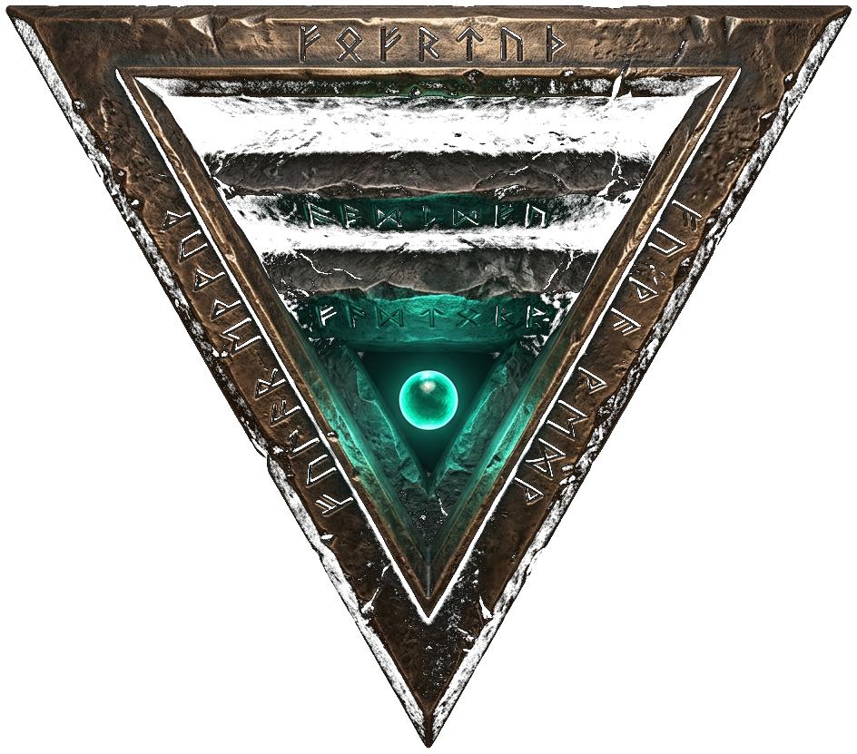
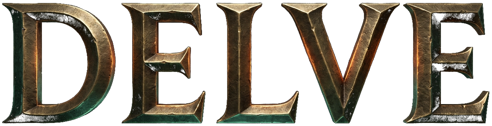

An unofficial, non-commercial fan project. Dungeons & Dragons, Phandelver and Below: The Shattered Obelisk and all Wizards of the Coast characters and locations are trademarks of Wizards of the Coast LLC. Used here without permission; no challenge to any trademark or copyright. This game will never be sold.
Web shell build: hand-written HTML, CSS and JavaScript with runtime Web Audio synthesis. The full game targets Unreal Engine 5.7.
Typefaces: Cinzel, Alegreya and IM Fell English under the SIL Open Font License.
Press any button to continue.

The Rockseeker Contract · Neverwinter muster-yard · dawn
Story: forgiving foes, longer reaction timers. Balanced: the intended table. Tactical: sharper foes, alert states bite.
Table Mode is the intended experience: full turns, full information. Skirmish Mode runs the same rules in flowing real time with pause.
By signing you accept the road as it comes. These choices may be changed at any camp.
Graphics settings apply in the full build; the web shell stores them with your contract.
The road is part of the story. The map opens in later chapters.
Audio files are added via assets/audio/ — see AUDIO_PROMPTS.md and AUDIO_GENERATION_GUIDE.md.